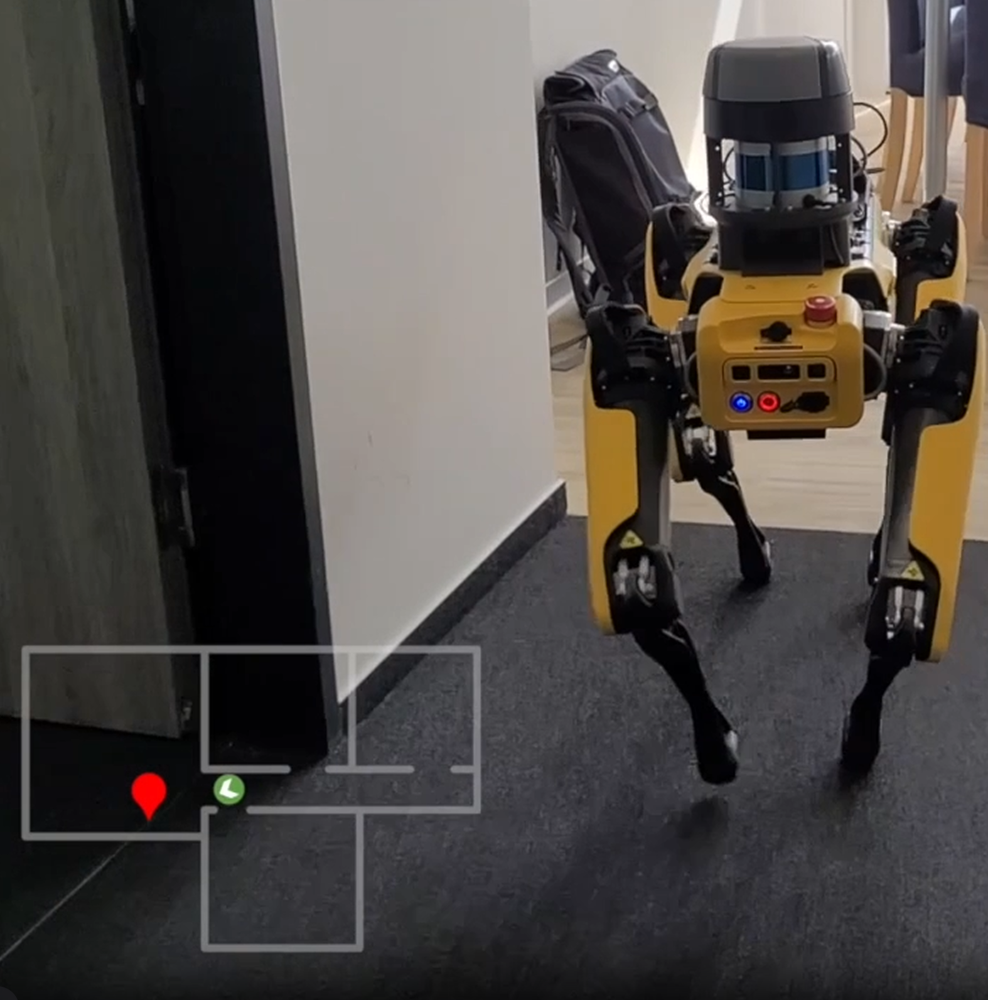

COOL: Curiosity-Driven Object Ownership Learning for Personalized Robotic Assistance
1Kiel University, Germany · *Equal contribution
We present COOL, a robotic framework for autonomously learning object ownership from everyday observations and maintaining a long-term spatial memory of its environment. COOL uses an agent-based curiosity-driven data collection strategy that guides the robot toward the most promising locations to gain information and refresh stale observations, enabling ownership-conditioned navigation and task execution.